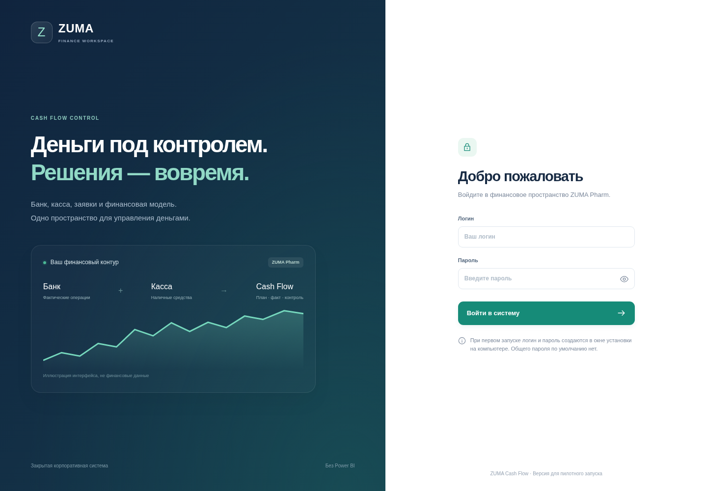

ZUMA · CASH FLOW CONTROL
Ваш сайт с входом и базой данных
Это инструкция к запускаемому проекту. Сайт ещё не размещён в интернете. Чтобы войти, сначала запустите сервер на компьютере или установите его на постоянный сервер.

Первый вход на Windows
- Распакуйте весь ZIP, например в
C:\Zuma_CashFlow. - Установите Python 3.12/3.13 с опцией Add Python to PATH, если он ещё не установлен.
- Запустите
START_WINDOWS.bat. Первый запуск устанавливает зависимости — нужен интернет. - В появившемся окне придумайте логин и пароль минимум из 12 символов. Пароль вводится невидимо; это нормально.
- Войдите в открывшемся браузере по адресу
http://127.0.0.1:8000, используя свой пароль. Окно сервера оставьте открытым.
На следующих запусках база и пользователи сохраняются. Для остановки нажмите Ctrl+C. Не запускайте index.html отдельно: он без сервера не работает.
Банк, касса и модель
Начните с раздела «Банк и касса»: задайте реальные начальные остатки. Прикреплённая FinModel уже включена в проект и импортируется как отдельный исторический снимок. Её значения не подставляются вместо текущих денег.
В разделе «Пользователи» создайте сотрудников. В «Лимиты» установите бюджет и выберите мягкий или жёсткий контроль. Затем создавайте заявки и подтверждайте реальные операции по выписке.
Вход с телефона
Для проверки в одной доверенной сети используйте START_FOR_PHONE.bat: он покажет локальный адрес компьютера. На телефоне открывается этот адрес, а не 127.0.0.1. Для реального удалённого доступа нужны сервер, HTTPS и защищённое подключение.
Google Drive
Ваш XLSX уже включён. Для автоматического чтения Диска самим сайтом нужно отдельно настроить сервисный аккаунт на своём сервере. Доступ ChatGPT сайту не передаётся. Ключи и пароли в чат отправлять не нужно.
Архив содержит вашу финансовую модель. Не публикуйте его и папки source/data/ключи в открытом доступе. Это первая пилотная версия, не завершённое промышленное внедрение.
Подробные инструкции
README_RU.md — запуск, роли, Google Drive и ограничения
SERVER_RU.md — сервер PostgreSQL и HTTPS
TEST_REPORT.md — что действительно проверено